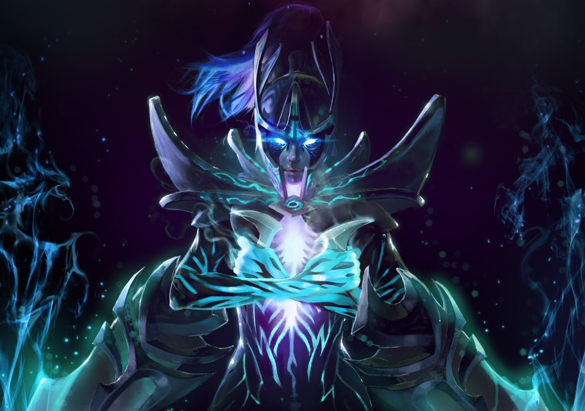

Defend of the Ancients 2
Dota 2 is a 2013 multiplayer online battle arena (MOBA) video game by Valve. The game is a sequel to Defense of the Ancients (DotA), a community-created mod for Blizzard Entertainment's Warcraft III: Reign of Chaos. Dota 2 is played in matches between two teams of five players, with each team occupying and defending their own separate base on the map. Each of the ten players independently controls a powerful character known as a "hero" that all have unique abilities and differing styles of play. During a match players collect experience points and items for their heroes to defeat the opposing team's heroes in player versus player combat. A team wins by being the first to destroy the other team's "Ancient", a large structure located within their base.
Phanthom Assasin : The Shadow Reaper
Through a process of divination, children are selected for upbringing by the Sisters of the Veil, an order that considers assassination a sacred part of the natural order. The Veiled Sisters identify targets through meditation and oracular utterances. They accept no contracts, and never seem to pursue targets for political or mercenary reasons. Their killings bear no relation to any recognizable agenda, and can seem to be completely random: A figure of great power is no more likely to be eliminated than a peasant or a well digger. Whatever pattern the killings may contain, it is known only to them. They treat their victims as sacrifices, and death at their hand is considered an honor. Raised with no identity except that of their order, any Phantom Assassin can take the place of any other; their number is not known. Perhaps there are many, perhaps there are few. Nothing is known of what lies under the Phantom Veil. Except that this one, from time to time, when none are near enough to hear, is known to stir her veils with the forbidden whisper of her own name: Mortred. Close History The moment she finds her prey, Phantom Assassin strikes. Instantly closing in on a target, she effortlessly dodges attacks as she relentlessly cuts away at her foe. Without warning, any one of her attacks could prove suddenly and brutally fatal.
Invoker : The Grandmaster Sorcerer
In its earliest days, or perhaps its most powerful form, magic was a science of memory. It required no science, no staff, no other equipment except the wizard's own mental power. The ritual objects were all mnemonics, allowing the apprentice to remember the many details of the specific mental formulas that would unleash the power of magic. The great wizards of the time were those who were extremely gifted with memory, those who could remember the spells that every wizard had to practice until they were proficient. The most dedicated could hope to master only three or four spells in a lifetime. The average wizard would learn only two, and it was common for the village wizard to know only one, forcing him to rely on spellbooks to remember the spells that were rarely used in case he was called upon for them. But among the early apprentices there was an exception. That brilliant genius with an excellent memory who would later be known as the Invoker in his youth. He was a skilled wizard who could not only remember four, five, or seven spells, but could cast no less than ten spells and call them up immediately. And there were more that he learned but found useless, having only practiced them once. He didn't plan on memorizing it forever, to make room for more useful spells. One such spell was the Sempiternal Cantrap -- a life-extending spell so powerful that its casters in the earliest days of the world are still alive today (unless they're crushed to pieces). Close history With a complex array of spells at his disposal, Invoker can adapt to any situation. Each of his three enchanted combinations will yield one of ten spells, meaning he's never without a way to destroy or evade his foes.